Yunfu in Guangdong is a city known as "the stone capital of China." On the map of the Lingnan region, it shines like a bright pearl.
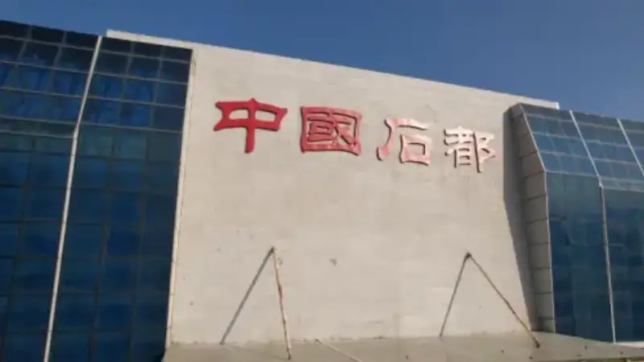
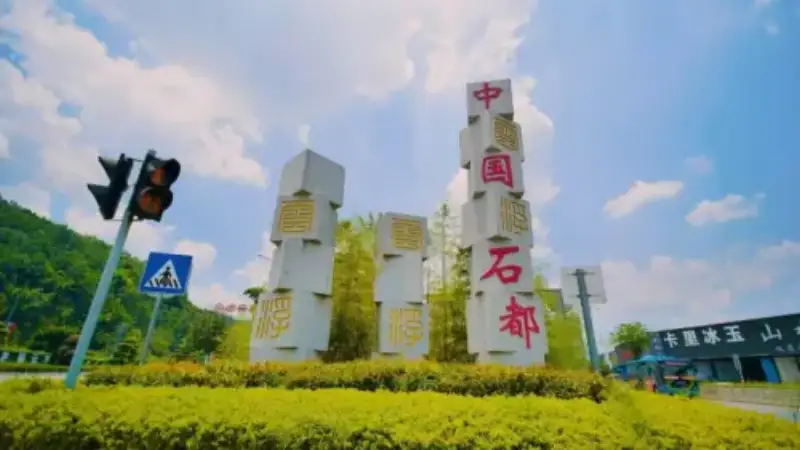
Every stone here is carved with the marks of time. Four hundred years of stone culture blend the raw craft of natural stone with human skill, and they have built a stone story the world watches.
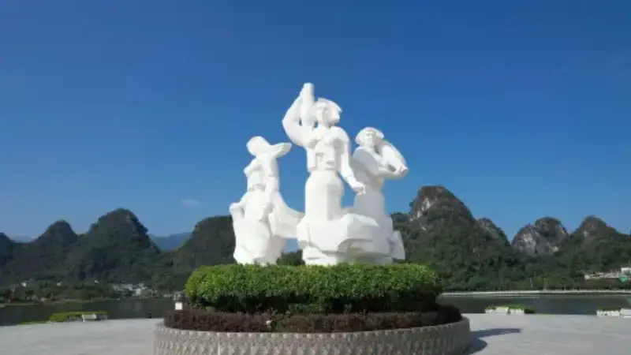
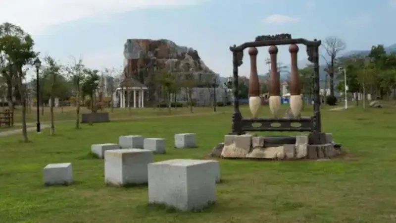
The stone treasury of Yunfu is like a palette of nature. It gathers "the essence of the world's geology," and holds more than a thousand kinds, such as marble, granite, and limestone.
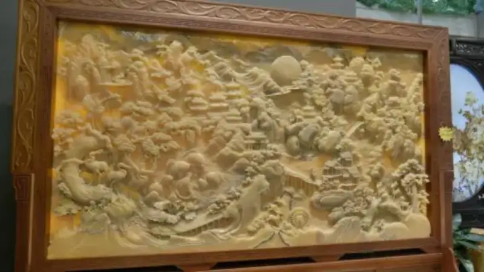
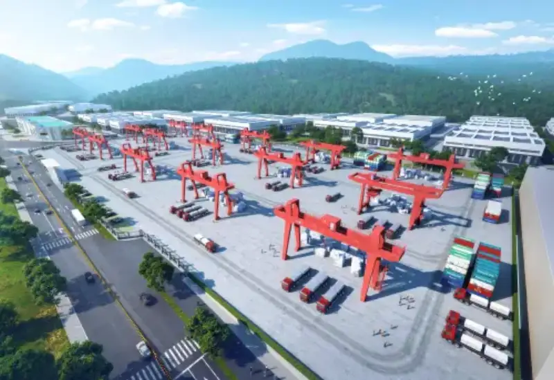
It also gathers the Blue Jade of Africa, the crystal of Italy, and the world-famous stones of Brazil, such as Snow Mountain Blue, Pandora, Golden Peacock, and Crystal Blue.
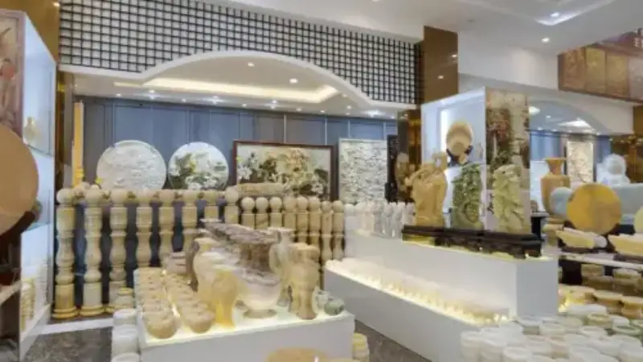
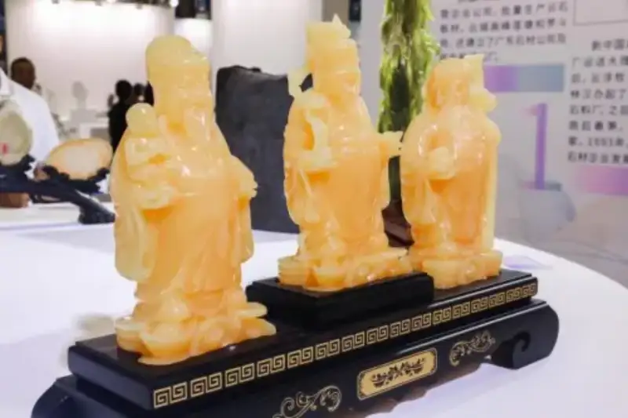
As a "model base for the stone trade in China" and "the capital of engineered stone in China," Yunfu holds an international stone tech show and a stone culture week every year. It draws buyers from around the world, and it truly "buys from the world and sells to the world."
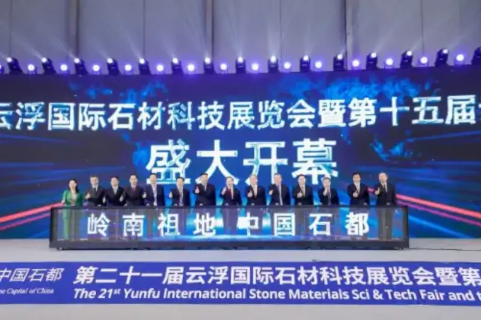
Yunfu has the largest stone industry cluster in the country. More than 4,000 firms line the "hundred-li stone corridor," and 200,000 workers drive growth through innovation.
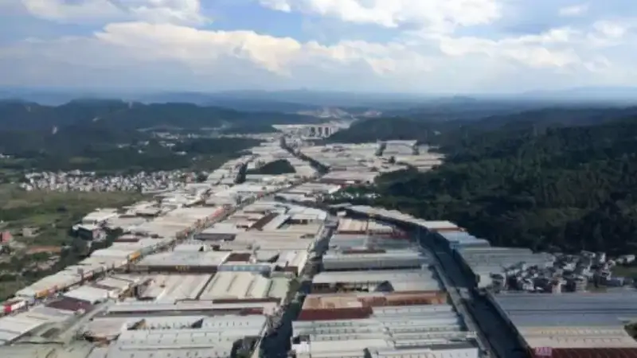
Clean production and digital upgrades move together. The old industry now shows new green life.

Today, Yunfu uses stone to connect with the world. Whether it is the grand plan of a building or the finishing touch of home beauty, Yunfu stone will carve a timeless classic for the world, with the soul of nature and the heart of the craftsman.
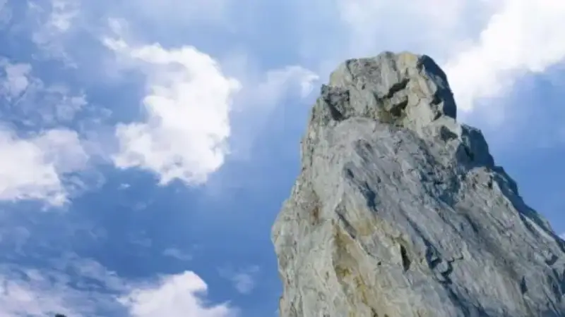
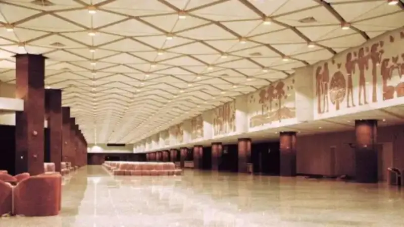
A quick tip:
The 22nd Yunfu International Stone Technology Expo and the 16th Yunfu Stone Culture Week will run from October 18 to 21, 2025, in Hall A of the Hekou International Stone Expo and Trade Center in Yunfu.
This year, stone firms take part by building stone experience halls and showing their work in a boutique style. We invite stone peers and stone designers from across China and around the world to take part or to visit.